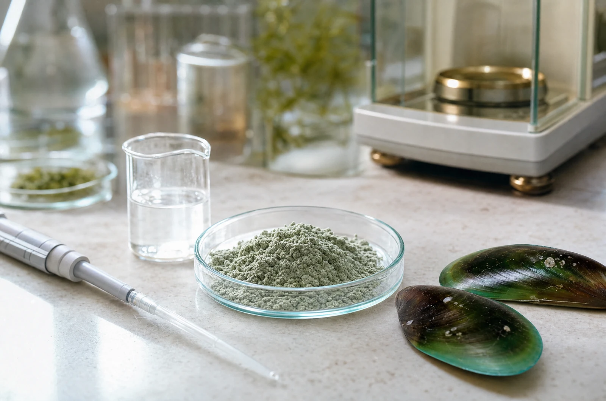
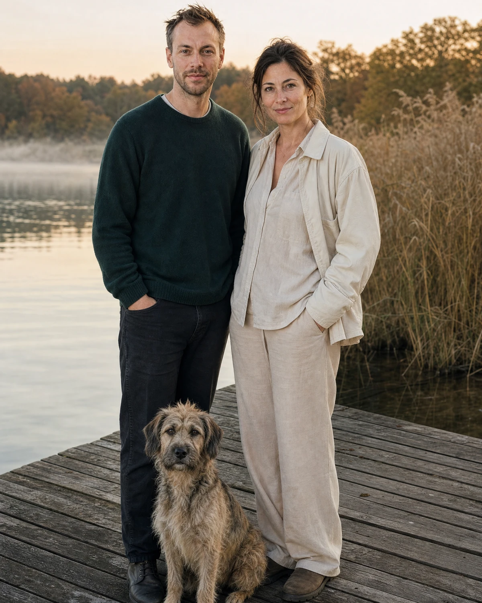

Aus Liebe zum Hund
Wir wollten ein Produkt, das es nicht gab
NatureFlow Pets ist in Ratzeburg entstanden, aus einem einfachen Befund: Es gibt einen großen Markt für Hundegesundheit – und darin kaum Produkte, die halten, was sie versprechen. Diese Seite erklärt, wer wir sind, wie wir arbeiten und woran du uns festnageln kannst.

Der Anfang
Es begann mit einem Hund, der langsamer wurde
Fast jeder, der einen Hund hat, kennt diesen Moment: Er springt nicht mehr ins Auto. Er bleibt beim Spaziergang zurück. Er steht morgens langsamer auf als noch im Jahr davor. Und man steht daneben und weiß nicht, was man tun soll.
Wer dann anfängt zu suchen, landet in einem Regal voller großer Worte. „Mit Grünlippmuschel.“ „Hochdosiert.“ „Von Experten entwickelt.“ Was fast nirgends steht: wie viel von dem Stoff eigentlich drin ist. Das ist kein Zufall – zehn Milligramm klingen auf der Zutatenliste genauso gut wie fünfhundert.
Genau an dieser Lücke ist NatureFlow entstanden. Nicht als Idee für ein Geschäft, sondern als Lösung für ein Problem, das wir selbst hatten.

Unsere Haltung
Drei Regeln, an die wir uns halten
Sie klingen selbstverständlich. In diesem Markt sind sie es nicht.
Erstens
Die Menge steht auf der Packung
Bei jedem Produkt findest du, wie viel Milligramm eines Wirkstoffs in einer Tablette oder einer Portion stecken – nicht nur, dass er „enthalten“ ist. Du kannst uns damit mit jedem anderen Anbieter vergleichen. Genau das ist der Sinn.
Zweitens
Wir sagen auch, was nicht belegt ist
Zu manchen Wirkstoffen ist die Studienlage stark, zu anderen dünn. Auf unserer Wissenschaftsseite steht beides – auch dort, wo uns das Ergebnis nicht schmeichelt. Ergänzungsfuttermittel sind keine Medikamente, und wer Heilung verspricht, verkauft dir eine Geschichte.
Drittens
Fehler benennen wir selbst
Unser Ziel ist unbescheiden: Wir wollen diesen Markt aufräumen, bis nur noch hochwertige, fundierte Produkte übrig sind. Dazu gehört, eine eigene Rezeptur öffentlich als verbesserungswürdig zu bezeichnen, wenn sie es ist. Wer das nicht tut, ist Teil des Problems.

Woran du uns messen kannst
Wenn wir eine Zahl nicht nennen, dann nicht, weil sie zu kompliziert ist – sondern weil sie uns nicht gefällt.
Deshalb nennen wir sie.
Echt und mit Gesicht
Hinter NatureFlow stehen Menschen, die man ansehen kann
Wir sind ein kleines Team von Hundehalterinnen und Hundehaltern. Aus dem ersten Produkt, gemeinsam mit Experten entwickelt, ist ein Sortiment auf wissenschaftlicher Basis geworden.
Aaron
Gründer
Kommt aus dem D2C-Marketing und hat NatureFlow aufgebaut, weil ihn die Lücke zwischen Versprechen und Deklaration in diesem Markt geärgert hat.
Evi
Produktentwicklung
Verantwortet Rezepturen und Lieferanten – und die unbequeme Frage, ob eine Dosierung wirklich reicht. Ihr Tierheimhund Joker ist der erste Testesser.

Herstellung
Produziert in Deutschland, geprüft vor der Abfüllung
Unsere Produkte entstehen in Deutschland. Rohstoffe kommen von ausgewählten Lieferanten, jede Charge wird vor der Abfüllung geprüft. Das ist keine Auszeichnung – das ist die Voraussetzung dafür, dass die Zahl auf der Packung etwas wert ist.
Die Verpackung folgt derselben Logik: Braunglas schützt lichtempfindliche Inhaltsstoffe, und auf der Vorderseite stehen die Wirkstoffe – kein Hundefoto.
Unser Versprechen
120 Tage Geld zurück – ohne Diskussion
Weil eine ehrliche Wirkung Zeit braucht, geben wir dir mehr Zeit, als die Wirkung braucht. Wenn du nach vier Monaten keinen Unterschied siehst, bekommst du dein Geld zurück – auch bei geöffneter Packung. Das gilt für jedes Produkt in diesem Shop.
Wir halten das für den ehrlichsten Test, den wir anbieten können: Du musst uns nicht glauben. Du musst es nur ausprobieren.